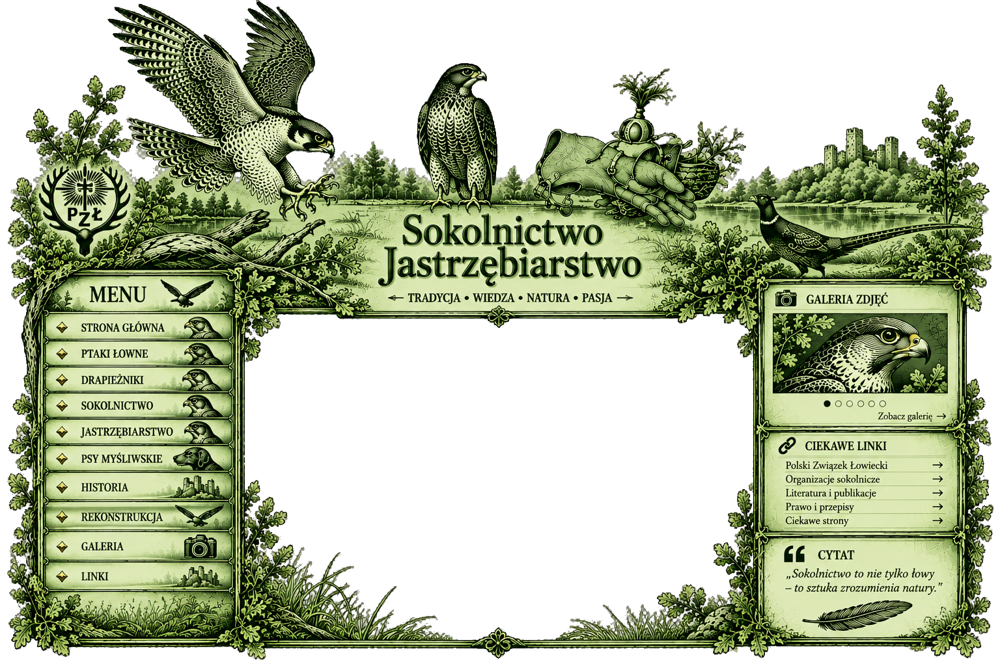

Sokolnictwo i Jastrzębiarstwo
Tradycja • Wiedza • Natura • Pasja
Witaj na stronie poświęconej sztuce układania i polowania z ptakami drapieżnymi. To miejsce o historii sokolnictwa, ptakach łownych, jastrzębiarstwie oraz więzi człowieka z naturą.

Tradycja • Wiedza • Natura • Pasja
Witaj na stronie poświęconej sztuce układania i polowania z ptakami drapieżnymi. To miejsce o historii sokolnictwa, ptakach łownych, jastrzębiarstwie oraz więzi człowieka z naturą.
Serwis poświęcony ochronie ptaków drapieżnych, w szczególności restytucji sokoła wędrownego w Polsce, jego reintrodukcji i obserwacjom w naturze.
Materiały wprowadzające w temat sokolnictwa, polskie organizacje sokolnicze oraz praktyczne informacje dla osób, które chcą lepiej poznać tę dziedzinę.
Międzynarodowa federacja organizacji sokolniczych. Promuje tradycję sokolnictwa, współpracę między sokolnikami oraz ochronę ptaków drapieżnych i ich siedlisk.
Organizacja zajmująca się zachowaniem i popularyzacją dziedzictwa sokolniczego, jego historii, tradycji i znaczenia kulturowego.